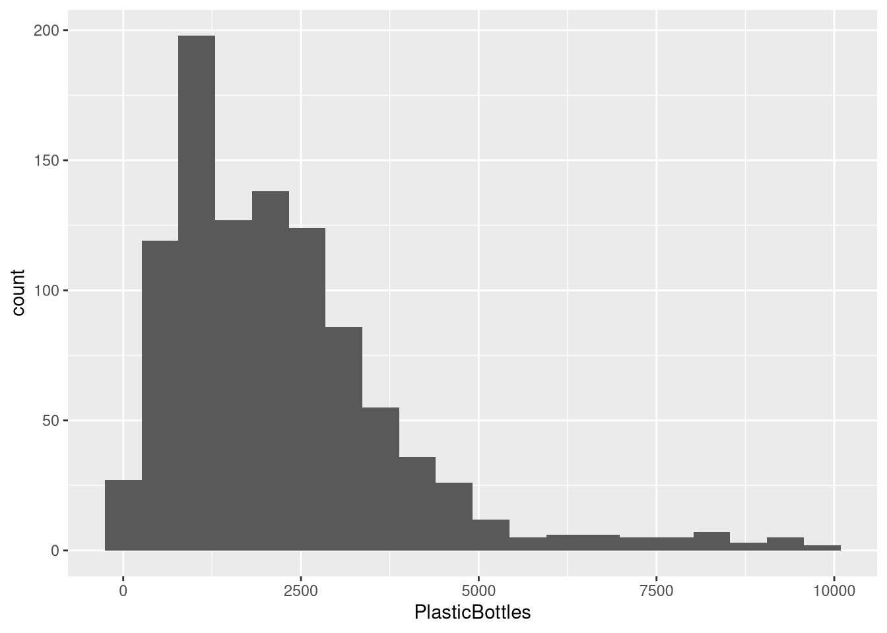
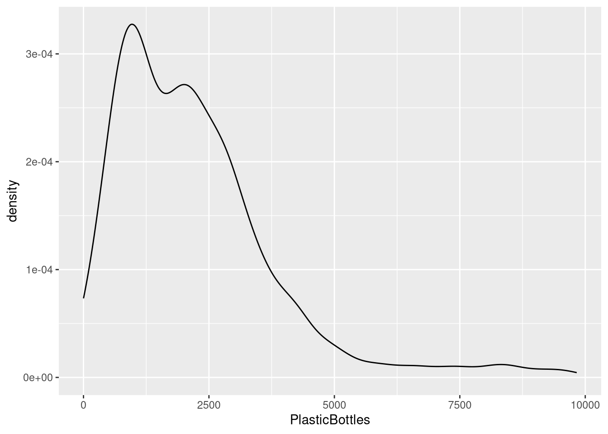
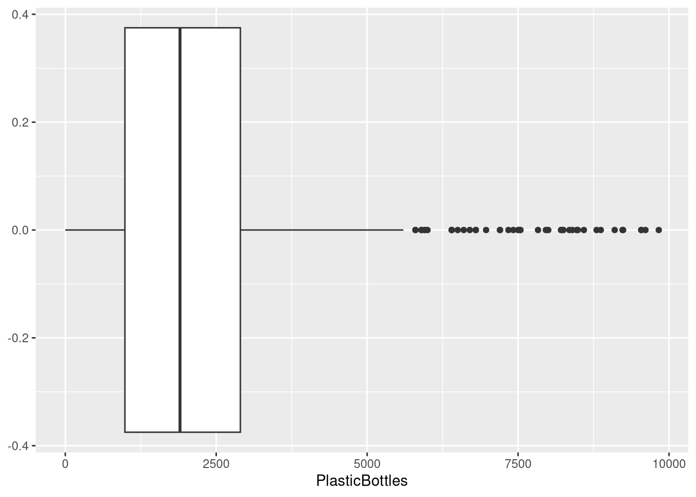
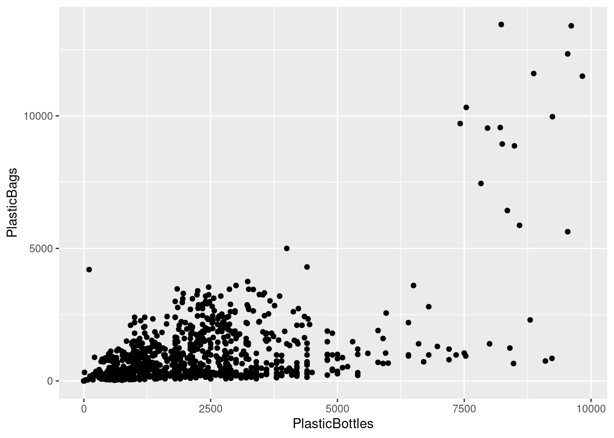
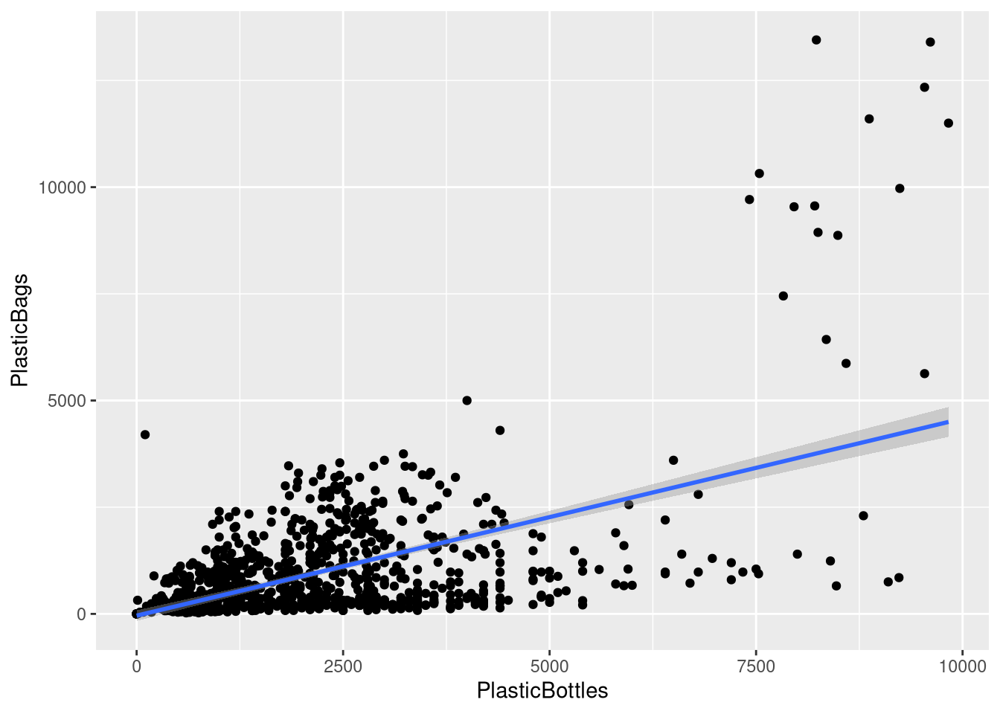

# This code will load the R packages we will use
install.packages(c("csucistats"),
repos = c("https://inqs909.r-universe.dev", "https://cloud.r-project.org"))
library(csucistats)
library(tidyverse)
# Uncomment and run for categorical plots
# csucistats::install_plots()
# library(ggtricks)
# library(ggmosaic)
# library(waffle)
# Uncomment and run for themes
# csucistats::install_themes()
# library(ThemePark)
# library(ggthemes)Numerical Data
Descriptive stats & visualizations for quantitative variables (mean/median, spread, hist/box/scatter)
A student-friendly reference with concise explanations, runnable examples, and copy-paste templates for summarizing and visualizing numerical data in R.
1 Setup
2 Learning goals
- Identify numerical (quantitative) variables and read their distributions.
- Compute core descriptive statistics: min, Q1, median (Q2), mean, Q3, max, IQR, variance, sd.
- Make and interpret histograms, box plots, dot plots, and scatter plots.
- Recognize outliers and what they may indicate.
- Use copy‑paste templates and replace placeholders with your data/columns.
Tip
Use the Copy button on each code chunk. Most topics have a template first and a worked example using the Mr. Trash Wheel dataset.
3 Google Colab Setup
3.1 Data for this handout
We will use the Mr. Trash Wheel dataset from TidyTuesday.
Code
trashwheel <- read_csv(
"https://raw.githubusercontent.com/rfordatascience/tidytuesday/master/data/2024/2024-03-05/trashwheel.csv")3.2 Using the templates: what to change
Use this legend whenever you see a Template code block.
DATA→ replace with your data frame/tibble name (e.g.,trashwheel).VAR→ replace with the single numerical variable you want (e.g.,PlasticBottles).In
ggplot(DATA, aes(x = VAR)), writeggplot(trashwheel, aes(x = PlasticBottles)).In functions that take a vector (e.g.,
mean(DATA$VAR)), writemean(trashwheel$PlasticBottles).
VAR1andVAR2→ replace with the x and y variables for scatter plots (e.g.,PlasticBottles,PlasticBags).bins = X,binwidth = X→ choose a sensible number/width for your data scale.
3.2.1 Quick replace checklist
Swap
DATAfor your data frame (usuallytrashwheel).Swap
VARfor your numerical column (e.g.,PlasticBottles).For scatter plots, set
VAR1andVAR2.Adjust
binsorbinwidthfor histograms/dot plots to show the distribution clearly.
4 Summary statistics
4.1 What is numerical data?
Numerical (quantitative) variables record numbers for which arithmetic makes sense (e.g., items collected, weights, costs).
Example (first few values):
head(trashwheel$PlasticBottles)#> [1] 1450 1120 2450 2380 980 14304.2 Central tendency
Central tendency summarizes a distribution with a representative value (mean or median).
Median (Q2) is the 50th percentile: half the data lie below it.
Mean is the arithmetic average: sensitive to outliers/skew.
4.3 Variation (spread)
Variation describes how far data tend to fall from the center.
Range = max − min
IQR = Q3 − Q1 (middle 50%)
Variance/SD measure average squared/root‑mean‑squared distance from the mean.
4.4 Summary Statistics
Template:
num_stats(DATA$VAR) # five-number summary + meanExample:
num_stats(trashwheel$PlasticBottles)#> min q25 mean median q75 max sd var iqr missing
#> 1 0 987.5 2219.331 1900 2900 9830 1650.449 2723984 1912.5 1Alternative:
summary(DATA$VAR) # five-number summary + mean4.5 Mean, median, variance, sd
Template:
mean(DATA$VAR)
median(DATA$VAR)
var(DATA$VAR)
sd(DATA$VAR)With Missing Data:
mean(DATA$VAR, na.rm = TRUE)
median(DATA$VAR, na.rm = TRUE)
var(DATA$VAR, na.rm = TRUE)
sd(DATA$VAR, na.rm = TRUE)Example:
mean(trashwheel$PlasticBottles, na.rm = TRUE)#> [1] 2219.331median(trashwheel$PlasticBottles, na.rm = TRUE)#> [1] 1900var(trashwheel$PlasticBottles, na.rm = TRUE)#> [1] 2723984sd(trashwheel$PlasticBottles, na.rm = TRUE)#> [1] 1650.4494.6 Quantiles
Template:
quantile(DATA$VAR, probs = c(0.25, 0.5, 0.75), na.rm = TRUE)#> Error: object 'DATA' not foundExample:
quantile(trashwheel$PlasticBottles, probs = c(0.25, 0.5, 0.75), na.rm = TRUE)#> 25% 50% 75%
#> 987.5 1900.0 2900.05 Data visualization
5.1 Histograms
A histogram shows the distribution by binning values and counting how many fall in each bin.
Template (choose either bins OR binwidth):
ggplot(DATA, aes(x = VAR)) +
geom_histogram(bins = X) Example:
ggplot(trashwheel, aes(x = PlasticBottles)) +
geom_histogram(bins = 20)#> Warning: Removed 1 row containing non-finite outside the scale range
#> (`stat_bin()`).
5.2 Kernel density plot
Template:
ggplot(DATA, aes(x = VAR)) +
geom_density()Example:
ggplot(trashwheel, aes(x = PlasticBottles)) +
geom_density()#> Warning: Removed 1 row containing non-finite outside the scale range
#> (`stat_density()`).
5.3 Box plots
A box plot summarizes median, quartiles, and potential outliers.
Template:
ggplot(DATA, aes(VAR)) +
geom_boxplot()Example:
ggplot(trashwheel, aes(PlasticBottles)) +
geom_boxplot() #> Warning: Removed 1 row containing non-finite outside the scale range
#> (`stat_boxplot()`).
5.4 Dot plots
A dot plot stacks dots within bins to show distribution.
Template:
ggplot(DATA, aes(x = VAR)) +
geom_dotplot(binwidth = X) # choose a sensible binwidthExample:
ggplot(trashwheel, aes(x = PlasticBottles)) +
geom_dotplot(binwidth = 100)#> Warning: Removed 1 row containing missing values or values outside the scale range
#> (`stat_bindot()`).
6 Scatter plots (two numerical variables)
A scatter plot reveals association, trend direction, and form.
Template:
ggplot(DATA, aes(x = VAR1, y = VAR2)) +
geom_point()Example:
ggplot(trashwheel, aes(x = PlasticBottles, y = PlasticBags)) +
geom_point()#> Warning: Removed 1 row containing missing values or values outside the scale range
#> (`geom_point()`).
Add a trend line (optional):
ggplot(trashwheel, aes(x = PlasticBottles, y = PlasticBags)) +
geom_point() +
geom_smooth(method = "lm", se = TRUE)#> `geom_smooth()` using formula = 'y ~ x'#> Warning: Removed 1 row containing non-finite outside the scale range
#> (`stat_smooth()`).#> Warning: Removed 1 row containing missing values or values outside the scale range
#> (`geom_point()`).
7 Quick troubleshooting
Lots of NAs? Add
na.rm = TRUEwhere available or filter rows withdrop_na(VAR).Histogram looks too blocky/smooth? Tune
binsorbinwidth.Weird axis or units? Check for unit conversions or outliers dominating the scale.
Outliers change the mean a lot. Consider reporting median or using robust summaries.
8 Appendix: minimal templates (copy‑paste)
Each template below has placeholders in ALL CAPS (e.g., DATA, VAR, VAR1, VAR2). Replace them with your dataset name and variable names.
# Five-number summary & IQR
summary(DATA$VAR)#> Error: object 'DATA' not foundIQR(DATA$VAR, na.rm = TRUE)#> Error: object 'DATA' not foundrange(DATA$VAR, na.rm = TRUE)#> Error: object 'DATA' not found# Mean / Median / Var / SD
mean(DATA$VAR, na.rm = TRUE)#> Error: object 'DATA' not foundmedian(DATA$VAR, na.rm = TRUE)#> Error: object 'DATA' not foundvar(DATA$VAR, na.rm = TRUE)#> Error: object 'DATA' not foundsd(DATA$VAR, na.rm = TRUE)#> Error: object 'DATA' not found# Quantiles
quantile(DATA$VAR, probs = c(0.25, 0.5, 0.75), na.rm = TRUE)#> Error: object 'DATA' not found# One-liner (csucistats)
num_stats(DATA$VAR)#> Error: object 'DATA' not found# Histogram
ggplot(DATA, aes(x = VAR)) + geom_histogram(bins = 30)#> Error: object 'DATA' not found# Density
ggplot(DATA, aes(x = VAR)) + geom_density()#> Error: object 'DATA' not found# Box plot
ggplot(DATA, aes(x = 1, y = VAR)) + geom_boxplot() + labs(x = NULL)#> Error: object 'DATA' not found# Dot plot
ggplot(DATA, aes(x = VAR)) + geom_dotplot(binwidth = X)#> Error: object 'DATA' not found# Scatter
ggplot(DATA, aes(x = VAR1, y = VAR2)) + geom_point(alpha = 0.7)#> Error: object 'DATA' not found# Scatter + trend line
ggplot(DATA, aes(x = VAR1, y = VAR2)) + geom_point(alpha = 0.7) + geom_smooth(method = "lm", se = TRUE)#> Error: object 'DATA' not found